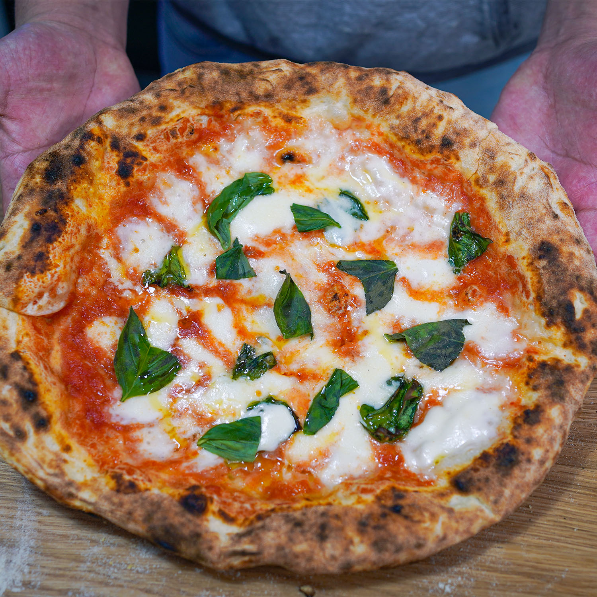

Home
Neapolitan Pizza

Description
Neapolitan pizza is a type of pizza that originated in Naples,
Italy, known for its thin, soft, and slightly wet crust with a
puffy, leopard-spotted cornicione (outer edge). It's typically
cooked in a wood-fired oven at extremely high temperatures for a
short time. Authentic Neapolitan pizza features simple, fresh
ingredients like San Marzano tomatoes, fresh mozzarella (buffalo or
fior di latte), and basil.
Ingredients
- 600 ml water
- 1 kg Flour Le 5 Stagioni Pizza Napoletana brand, 35 oz
- 30 g Salt, 1 oz
- 1 gram Dry yeast
- Pizza Toppings
Steps
-
Combine flour, yeast, and water; mix and rest for 30 minutes.
Add salt and knead for 15-20 minutes until smooth and elastic.
Let it rise in the fridge for 24 hours or more, then bring to
room temperature before shaping.
-
Divide dough into balls, fold corners to center, and form smooth
balls. Let them rise again at room temperature until doubled in
size (about 2 hours).
-
On a floured surface, press and gently stretch the dough into a
12-inch circle, being careful not to tear it.
-
Heat pizza stone at highest oven temperature (about 550°F/290°C)
for at least 45 minutes, then turn on broiler if available.
-
Place dough on a floured peel, add a thin layer of tomato sauce,
fresh mozzarella or bocconcini slices, fresh basil leaves, and a
drizzle of extra virgin olive oil. Avoid overloading toppings to
keep crust crisp.
-
Slide pizza onto the hot stone, bake for 4-8 minutes until crust
is lightly charred and cheese melted. Rotate if needed, keeping
oven door closed as much as possible.
-
Remove pizza, cut into slices, garnish with fresh basil and
olive oil if desired, and serve immediately.